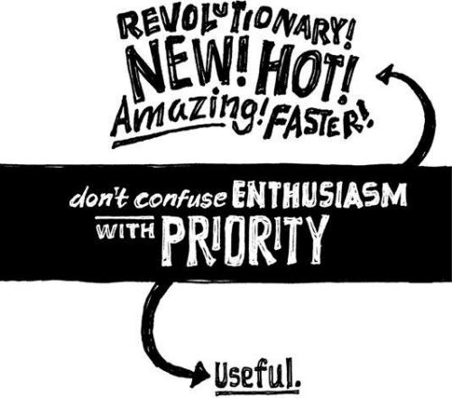

{% include JB/setup %}
{% raw %}
<div>

<h2 id="filepos163032" class="calibre19"><span class="calibre2"><a class="calibre13"></a><strong class="calibre14">Let your customers outgrow you</strong></span></h2><div class="calibre4"></div>
<p class="calibre7">Maybe you've seen this scenario: There's a customer that's paying a company a lot of money. The company tries to please that customer in any way possible. It tweaks and changes the product per this one customer's requests and starts to alienate its general customer base.</p>
<p class="calibre17">Then one day that big customer winds up leaving and the company is left holding the bag--and the bag is a product that's ideally suited to someone who's not there anymore. And now it's a bad fit for everyone else.</p>
<p class="calibre17">When you stick with your current customers come hell or high water, you wind up cutting yourself off from new ones. Your product or service becomes so tailored to your current customers that it stops appealing to fresh blood. And that's how your company starts to die.</p>
<p class="calibre17">After our first product had been around for a while, we started getting some heat from folks who had been with us from the beginning. They said they were starting to grow out of the application. Their businesses were changing and they wanted us to change our product to mirror their newfound complexity and requirements.</p>
<p class="calibre17">We said no. Here's why: We'd rather our customers grow out of our products eventually than never be able to grow into them in the first place. Adding power-user <a class="calibre16"></a>features to satisfy some can intimidate those who aren't on board yet. Scaring away new customers is worse than losing old customers.</p>
<p class="calibre17">When you let customers outgrow you, you'll most likely wind up with a product that's basic--and that's fine. Small, simple, basic needs are constant. There's an endless supply of customers who need exactly that.</p>
<p class="calibre17">And there are always more people who are <em class="italic1">not</em> using your product than people who are. Make sure you make it easy for these people to get on board. That's where your continued growth potential lies.</p>
<p class="calibre17">People and situations change. You can't be everything to everyone. Companies need to be true to a <em class="italic1">type</em> of customer more than a specific individual customer with changing needs.</p>
<p class="calibre3"><a class="calibre16"></a></p><div class="calibre4"></div>
<div class="mbppagebreak" id="calibre_pb_94"></div></div>

{% endraw %}

